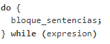
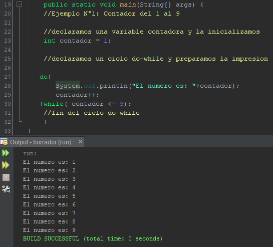
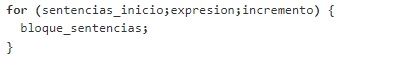
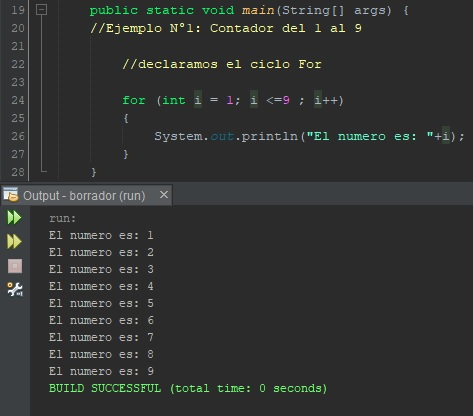

CURSO JAVA

Bucles
Siguiendo con el curso del lenguaje de programacion Java, en esta ocasion estudiaremos bucles, estas sentencias son de las mas importantes y de las mas usadas en la programacion en cualquier lenguaje
Se denomina bucle a una sentencia que repite X veces un determinado codigo hasta que hasta que una condicion (asignada al bucle) deja de cumplirse. Los bucles mas importantes dentro del lenguaje Java son:
Bloque while
El bucle while permite que el código se ejecute repetidamente en función de una condición booleana dada. While realiza una primera evaluación antes de ejecutar el bloque. Si la expresión es true pasa a ejecutar de forma repetida el bloque de sentencias. Cada vez que termina de ejecutar el bloque de sentencias vuelve a evaluar la expresión. Si la expresión sigue siendo true vuelve a ejecutar el bloque. En el caso de que la expresión sea false se saldrá del bucle. Su estructura es la siguiente:
Como podemos ver en la imagen anterior su estructura es muy parecida a la de una sentencia if, por esta similitud, el ciclo while se considera como un if repetitivo,
Ejemplo N°1
Realice un programa usando el ciclo While, que imprima los numeros del 1 al 9. La solucion es la siguiente:
Como vemos en la solucion, el ciclo while sirve para imprimir repetidamente el valor de la varible contador, que incrementa en 1 cada iteracion del ciclo while, ademas la condicion del while valida que la variable contador sea menor que 9 y cuando eso sucede, se sale del ciclo y termina la ejecucion del ejercicio.
Sentencia Do-while
Esta estructura ciclica es una modificacion del ciclo while visto anteriormente, donde la validacion de la condicion booleana se hace hasta el final. esto le da su caracteristica principal a este ciclo, la cual es que el codigo del ciclo se ejecutara al menos 1 vez de manera obligatoria. su estructura es la siguiente:

Al analizar la forma del ciclo podemos ver que al inicio del flujo del programa, el ciclo do-while no tiene ninguna validacion por lo que el codigo encerrado en la sentencia se ejecuta, al finalizar esto el validador while del final comprueba la condicion, si esta es verdadera vuelve a ejecutar el codigo guardado en la sentencia, sino saldra del bucle, esta forma de trabajo es una caracteristica propia de este ciclo, por lo que se le considera al ciclo do-while un ciclo un bucle de control de salida.
Ejemplo N°2
Realice el ejercicio 1 pero aplicando un ciclo Do-while. La solucion considerada es la siguiente

Como vemos en el ejemplo, el ciclo do while valida la condicion del numero al final de la funcion, no al principio como en while. Pero a pesar de la diferencia entre las funciones, como vemos en este ejemplo podemos hacer codigos equivalentes entre dichas funciones.
Sentencia for
El ciclo for es el ciclo mas utilizado en el lenguaje Java, por su veratibilidad y su estructura, ya que es diferente a las de los ciclos vistos anteriormente. La sentencia for tiene la característica de que tiene bien definido el inicio del bloque, la evaluación de la expresión, el incremento de valor y el bloque de sentencias. Esto hace que el codigo sea facil de comprender y de ejecutar. sus usos en general radican en la repeticion controlada de secciones de codigo. Su estructura es la siguiente:

Como podemos ver, el ciclo for en su argumento contiene 3 partes bien definidas separadas por puntos y comas: La primera parte es la Sentencia de inicio, aqui se define e inicia el iterador de la funcion, este sera el encargado de almacenar el valor que sera comparado en la expresion y asi decidir el numero de la iteracion y si se debe iterar de nuevo, de manera general y como un estandar no definido, la variable de iteracion en la mayoria de casos del ciclo for es "i". La segunda parte es la expresion, aqui se forma una condicion booleana tomando en cuenta la variable de la sentencia de inicio, por lo general es en esta parte donde se limitan las iteraciones del ciclo. Por ultimo tenemos el incremento (o decremento), aqui se aumenta el valor de la variable de la parte uno (i++) o se disminuye (i++), dependiendo del valor de inicio y de la condicion, es importante siempre añadir el incremento o decremento de la variable ya que sino caeremos en un ciclo infinto que se trata de un error de sintaxis dentro de la aplicacion.
Ejemplo N°3
Realice el ejercicio N°1 usando un ciclo For. La solucion considerada es la siguiente:

Como se ve en el ejemplo, el ciclo for es una funcion mas corta pero que esta bien definida, ya que sus componentes estan presentes en el argumento de la funcion. la variable de iteracion ("i") se inicia en 1 para que se imprima desde 1, luego se compara si el valor de i sea menor o igual a 9, si es asi se imprimira el valor y despues se incrementara el valor de i, esto se repite hasta que la condicion sea falsa. Por otro lado, si vemos la impresion, el valor de i se utiliza para imprimir los numeros que tiene almacenados. esto es una practica totalmente valida y por lo general usada para recorrer arreglos, que los veremos mas adelante. esto solo se puede hacer dentro del codigo de la funcion for, fuera la variable i no existe en el contexto del codigo.
Ciclo for each
El ciclo for each es una modificion del ciclo for, es utilizada para un optimo trabajo en el manejo de arreglos o matrices, temas que veremos en las siguientes clases. Por el momento se hablara de manera general de dicho iterador, la estructura de dicho iterador es la siguiente:

Como vemos en el ciclo for each, los 3 argumentos se simplifican a 1 solo, el cual es una definicion de una variable que recorerra el arreglo de uno en uno hasta el final, por lo que no importa el indice y por eso no se inicializa, ademas el incremento solo se realiza hacia arriba (++) y la funcion lo hace automaticamente, ya que recorre uno por uno los elementos del array. Todo esto se explicara de manera mas detallada en clases posteriores.
Contenido multimedia